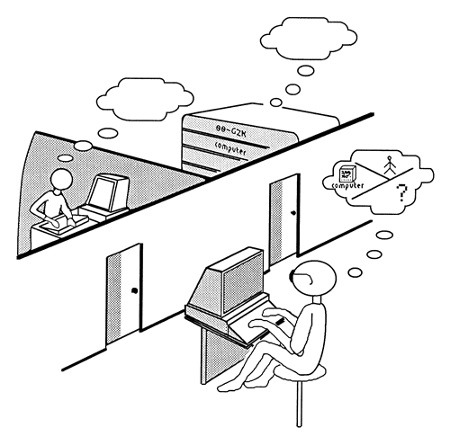
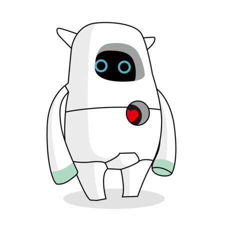
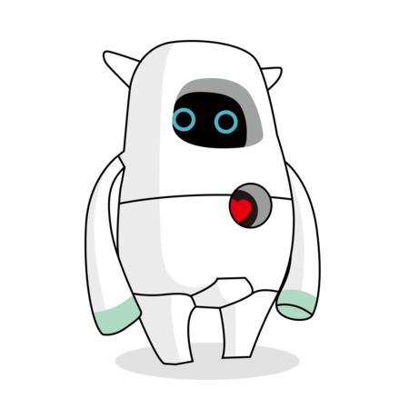
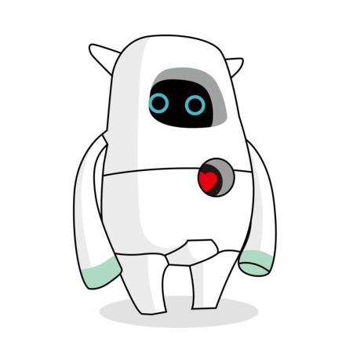
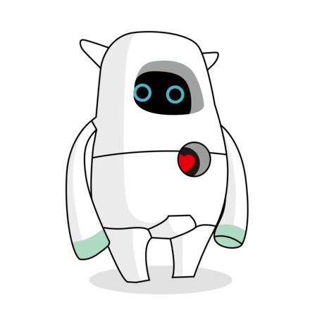

 



영국의 수학자, 논리학자인 앨런 튜링을 소개하면 그는 세계 2차 대전 때 독일군의 에니그마라는 암호기를 해독하여 연합군을 승리를 이끌었습니다. 1950년에 튜링은 [계산 기계와 지성 / "Computing Machinery and Intelligence]이라는 제목으로 논문을 발표하였고, 이를 통해 컴퓨터가 사람처럼 생각할 수 있다는 의견을 제시하였습니다.튜링은 컴퓨터와 대화를 나누어서 컴퓨터의 반응을 인간과 구별할 수 없다면 해당 컴퓨터가 사고(인식, 판단 능력 기준) 할 수 있는 것으로 간주하여야 한다고 주장하였습니다.
또다른 인공지능의 개척자라고 불리우는 분은 미국의 컴퓨터 과학자이자 수학자인 존 매카시 교수입니다. 그는 1956년 미국 다트머스에서 열린 학회에서 ‘인공지능‘ 이라는 용어를 처음 사용하였고, 인공지능의 기본 컴퓨터 언어인 ’리스프‘를 개발하였습니다.